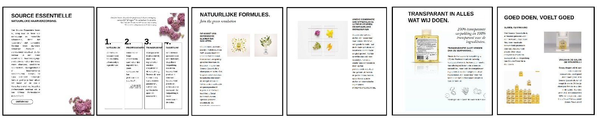
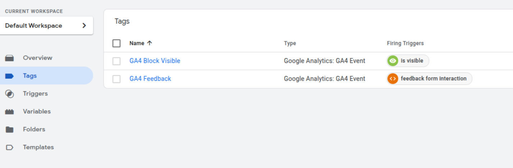
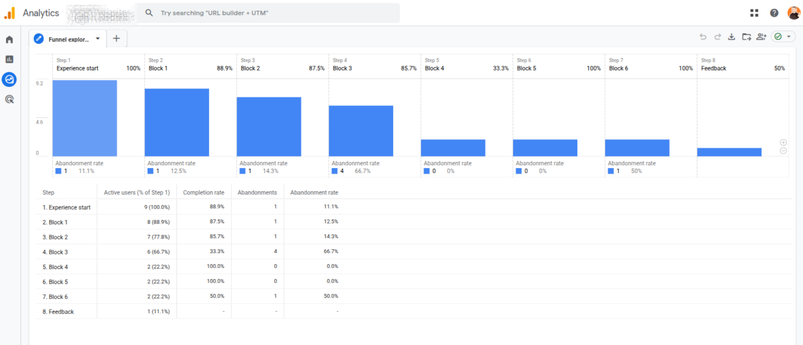

Case study : customer experience journey mapping
Scenario Overview
Tracking customer experience is crucial for understanding how customers interact with your brand or products. It helps identify pain points, improve customer satisfaction, and increase retention rates. By monitoring customer experience, companies can make data-driven decisions to enhance their services and products.
M'real, a beauty and cosmetics producer, aims to launch a new product in the market by promoting it through social media, with the main product communication on a web landing page. They are actively seeking a web analyst who provides the team and stakeholders with digital customer experience insights into communication performance.

Initial assessment and KPI determination
The landing page is designed with graphical and textual content organized into logical blocks. The main goal is to encourage users to experience the potential results of using the product by interacting with a sentiment buttons and providing feedback, such as 'should try', 'skip', or 'avoid'.
user experience journey map
Key Performance Indicators (KPIs)
- sessions
- bounce rate
- session duration distribution
- each block conversion to interaction funnel
- feedback per user
Developing Data Mapping and Collection Schema
To effectively track customer experience, it's essential to develop a comprehensive data mapping and collection schema. This involves identifying key touchpoints, defining metrics, and setting up data collection methods. A well-structured schema ensures that all relevant data is captured accurately and consistently.
Translating user experience journey to technical tracking map
Breaking down a landing page into logical blocks, each designed to communicate a specific piece of information, helps shape the user's experience journey. Tracking the visibility of these blocks using visibility triggers ensures that the data collected reflects the information actually seen by the user.
Implementing Necessary Tags with GTM
Google Tag Manager (GTM) simplifies the process of implementing tracking tags on your website. By using GTM, you can manage and deploy various tags without modifying the codebase. This section will guide you through setting up essential tags to track customer interactions and behaviors.

Click to expand tags code
"tag": [
{
"name": "GA4 Feedback",
"type": "gaawe",
"parameter": [
{
"type": "LIST",
"key": "eventSettingsTable",
"list": [
{
"type": "MAP",
"map": [
{
"type": "TEMPLATE",
"key": "parameter",
"value": "event_text"
},
{
"type": "TEMPLATE",
"key": "parameterValue",
"value": "{{Event Text}}"
}
]
}
]
},
{
"type": "TEMPLATE",
"key": "eventName",
"value": "{{Event}}"
},
],
"tagFiringOption": "ONCE_PER_EVENT",
},
{
"name": "GA4 Block Visible",
"type": "gaawe",
"parameter": [
{
"type": "LIST",
"key": "eventSettingsTable",
"list": [
{
"type": "MAP",
"map": [
{
"type": "TEMPLATE",
"key": "parameter",
"value": "block_name"
},
{
"type": "TEMPLATE",
"key": "parameterValue",
"value": "{{Click ID}}"
}
]
}
]
}
],
"tagFiringOption": "ONCE_PER_EVENT",
}
]
Click to expand trigger GTM code
"trigger": [
{
"name": "visibility block",
"type": "ELEMENT_VISIBILITY",
"filter": [
{
"type": "EQUALS",
"parameter": [
{
"type": "TEMPLATE",
"key": "arg0",
"value": "{{Click ID}}"
}
]
}
],
"parameter": [
{
"type": "TEMPLATE",
"key": "elementSelector",
"value": "h2"
},
{
"type": "TEMPLATE",
"key": "firingFrequency",
"value": "ONCE_PER_ELEMENT"
},
{
"type": "TEMPLATE",
"key": "selectorType",
"value": "CSS"
},
{
"type": "TEMPLATE",
"key": "onScreenRatio",
"value": "95"
}
]
}
]
Creating Report in GA4
Google Analytics 4 (GA4) offers advanced reporting capabilities to analyze customer experience data. Learn how to create custom reports in GA4 to visualize key metrics and gain insights into customer behavior. This section will cover the steps to set up and customize reports in GA4.
By implementing tags, we can access data generated by each user experience. A funnel report would be one of the possibilities to get this data and turn it into insights at a glance. Hopefully, a well-prepared data gathering schema will make it easy to do.

This report clearly communicates customer journey steps based on interested breakdowns such as channels. It provides valuable information about the performance of each content block and satisfies almost all KPIs. However, it has several disadvantages, such as inflexible funnel dimensions, limited interaction level tracking, and the inability to unleash additional information that can be sent by GTM. Additionally, it can't provide one of requirement KPI, session duration distribution, because it only has an average duration built-in metric.
Creating Report Using GA4 Export to BigQuery
For more advanced analysis, exporting GA4 data to BigQuery allows to leverage SQL queries and integrate with other data sources. This section will explain how to export GA4 data to BigQuery and create detailed reports to uncover deeper insights into customer experience.
Click to expand BigQuery SQL code
"code": [
{
`WITH Step1 AS (
SELECT
user_pseudo_id,
MIN(event_timestamp) AS step1_timestamp
FROM
your_dataset
WHERE
event_name = 'page_view' -- Example: User views a specific page
AND page_location LIKE '%/step1-page/%' -- Replace with your step 1 page URL
AND _TABLE_SUFFIX BETWEEN '20231026' AND '20231027' -- Adjust date range
GROUP BY 1),Step2 AS (
SELECT
user_pseudo_id,
MIN(event_timestamp) AS step2_timestamp
FROM
your_dataset
WHERE
event_name = 'add_to_cart' -- Example: User adds item to cart
AND _TABLE_SUFFIX BETWEEN '20231026' AND '20231027' -- Adjust date range
GROUP BY 1),Step3 AS (
SELECT
user_pseudo_id,
MIN(event_timestamp) AS step3_timestamp
FROM
your_dataset
WHERE
event_name = 'begin_checkout' -- Example: User starts checkout
AND _TABLE_SUFFIX BETWEEN '20231026' AND '20231027' -- Adjust date range
GROUP BY 1),Step4 AS (
SELECT
user_pseudo_id,
MIN(event_timestamp) AS step4_timestamp
FROM
your_dataset
WHERE
event_name = 'purchase' -- Example: User completes a purchase
AND _TABLE_SUFFIX BETWEEN '20231026' AND '20231027' -- Adjust date range
GROUP BY 1) SELECT
COUNT(DISTINCT s1.user_pseudo_id) AS step1_users,
COUNT(DISTINCT s2.user_pseudo_id) AS step2_users,
COUNT(DISTINCT s3.user_pseudo_id) AS step3_users,
COUNT(DISTINCT s4.user_pseudo_id) AS step4_users,
COUNT(DISTINCT CASE WHEN s2.user_pseudo_id IS NOT NULL THEN s1.user_pseudo_id END) AS step1_to_2,
COUNT(DISTINCT CASE WHEN s3.user_pseudo_id IS NOT NULL THEN s2.user_pseudo_id END) AS step2_to_3,
COUNT(DISTINCT CASE WHEN s4.user_pseudo_id IS NOT NULL THEN s3.user_pseudo_id END) AS step3_to_4 FROM
Step1 AS s1 LEFT JOIN
Step2 AS s2 ON s1.user_pseudo_id = s2.user_pseudo_id LEFT JOIN
Step3 AS s3 ON s2.user_pseudo_id = s3.user_pseudo_id LEFT JOIN
Step4 AS s4 ON s3.user_pseudo_id = s4.user_pseudo_id;
`}
]
Sessions
Bounce rate
Conversion to feedback
Users with feedback
The set of KPI cards allows:
- Integration with other applications like this
- Providing more complex calculations than Google Analytics UI can do
Some charts are impossible to build using the GA4 UI or GA4 reporting API. This is where direct streaming data comes to help. Such information can reveal hidden patterns in user behavior because valuable patterns can be detected to improve the user experience for the majority.
Funnel conversion
Funnel residuals
Summary
From this case study, we can learn how to break down the customer journey into key steps and map them to a data tracking system. Tracking user experience as a journey with certain points gives us the ability to measure the success of marketing communication, especially for new launches or awareness forming. It is clear to see that this is not rocket science. Now we are able to perform the next steps such as:
- extending the customer journey to remarketing or even product sales steps
- running content optimization A/B tests using KPIs to form hypotheses
- forecasting future brand forming campaign performance
- making recommendations for improvements to the current running campaign
- developing advanced user experiences by adding more interactions and journey points